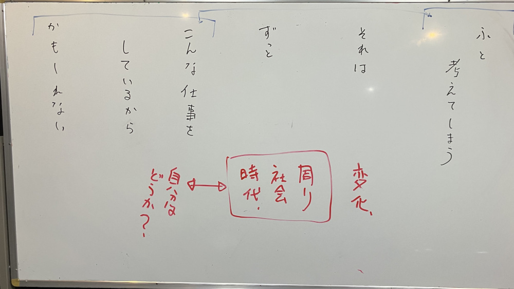

仕事について考える対話と独白

📖 稽古用テキスト
ふと
考えてしまう
それは
ずっと
こんな仕事を
しているから
かもしれない
おそらく、日常生活の中でこんな言葉は言わないし、これをなんの感慨もなく他者に対して口にすることもない。
その前提は共有しておく。このテキストを口にすることで、正解、不正解を探るのではなく、自分自身の態度や声のマッピングを行う最初の手かがりにする。
まずは、この短いテキストを口に出して言う。
二人は対面しているが、十分な距離を取る。
大きな声を出す必要はないが、相手にはきちんと声が聞こえる必要がある。
二人の人物のうち、実際に声に出すのがA、聞き手がBとする。
この言葉の前後の文脈は不明。
ただ、Aはこの言葉のなかに周囲の変化であり、社会の変化であり、時代の変化でありする様々なことと、自分自身をいうものについて、なにかを考えた結果、この言葉を発しているものとする。
Aはこの言葉を発するに当たって、どんな風に間をとっても構わない。
Bは、間になんらかの相槌や、オウム返しを挟むかもしれない。
AとBは、このセリフを通して、互いに距離感を変化させてはならない。
態度のフレームワークの中の「I. 協調的な態度 (Constructive)」を保つことを厳守。
Aはこのテキストの「ふと考えてしまう」や「こんな仕事をしているからかもしれない」だけではなく、テキスト全体をBに対して情報として共有し、その情報に対して何らかの反応を生じさせる必要がある。
ただし、Aの発生によって、反応がどうなるかが予測できる様ではいけない。
Aが、「ふとかんがえてしまう」状態の宣言とそんな風に考えた理由「こんな仕事をしているからかもしれない」について、Bに対してどの様に伝えたい意図があるのかが推察できるということは、つまり、なんらかの態度や、言葉の調子が出てしまっているということだ。
まずは、それを吟味する。
「フラット」はあり得るだろうか。その力加減はどんな風だろうか。
自分が一番「フラット」と思った発声と態度は、どんなイメージだというフィードバックがあっただろうか。
自分がやろうとしていることと実際、参照できる現実は無くても、想像のつく加減と実際にやってみたことの距離。
これらについての、自分自身で吟味することで、自分自身の傾向を知ることになる。
協調的な態度が保たれているか、場の空気はどうなっているかは、AとBを担当する二人の組み合わせでも変化する。
「正解」は無いが、自分がどんな風なのかを把握することはできる。
稽古のチェックポイント
| チェック項目 | A（話し手）の確認事項 | B（聞き手）の確認事項 | 備考・目的 |
|---|---|---|---|
| 物理的状況 | 相手にきちんと聞こえる声を出せているか | - | 十分な距離を取る。大きな声は不要 |
| 態度の維持 | 「協調的な態度」を保ち、2人の距離感を変化させていないか | 「協調的な態度」を保ち、2人の距離感を変化させていないか | 正解・不正解を探らない |
| 情報の伝達 | テキスト全体を「情報」として共有できているか | （必要に応じて相槌やオウム返しを挟む） | |
| 予測可能性の排除 | 意図や態度が透けず、相手の反応を予測させない発声になっているか | Aの意図や態度が透けて見えていないか観察する | 「フラット」な状態の力加減を探る |
| 吟味と内省 | 自身が意図した「フラット」な状態と、実際の印象（フィードバック）の距離を吟味できたか | Aの発声から受けた印象（イメージ）を率直にフィードバックする | 自身の声や態度の傾向を知り、マッピングの手がかりとする |